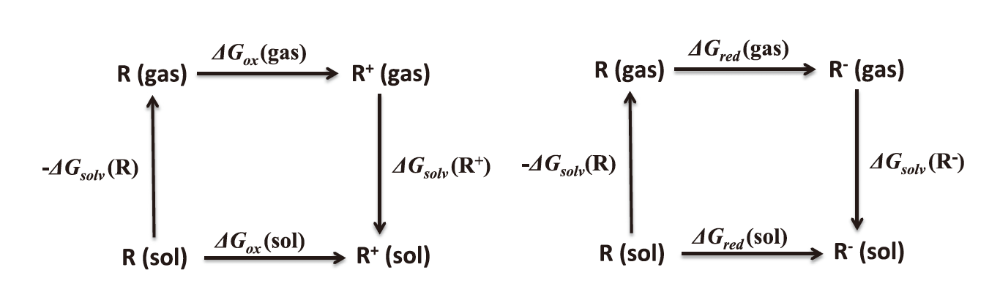

Molecules Explorer¶
Release Notes¶
Recent changes¶
Version 0.1 - July 16, 2016¶
- Initial release of Molecules Explorer.
Introduction¶
The primary goal of the molecular explorer is to report the atomic structure of molecules, found using quantum chemistry computational methods. Further quantities of interest, including the electron affinity (EA) and ionization energies (IE), are also reported.
Manual¶
Calculations¶
Atomic structures and quantities of interest were calculated using the Materials Project infrastructure with the quantum chemistry software Q-Chem at the backend. For small molecules, Q-Chem calculations were performed using the 6-31+G* Pople bases1 and the hybrid-functional B3LYP2. For molecules with more than 50 atoms, a hybrid procedure3 was used in which the geometry is optimized at a low level of theory and quantities of interest are still calculated at the B3LYP/6-31+G* level as a single point calculation.
Geometry Optimization¶
An atomic structure is stable if its vibrational frequency spectrum contains no imaginary frequencies. Thus, the atomic structures were calculated using a dynamic workflow that performs successive calculations until a geometry with zero imaginary frequencies is obtained3.
Properties¶
The electron affinity (EA) and ionization potential (IP) are given by \(\(EA = -\frac{\Delta G_{red}(sol)}{nF}\)\) \(\(IP = -\frac{\Delta G_{ox}(sol)}{nF}\)\)
where F is the Faraday constant, and \(\Delta G_{ox}(sol)\) and \(\Delta G_{red}(sol)\) are the Gibbs free energy change of oxidation and reduction in the solution phase, respectively.
 Figure 2: Free energy cycle for computing the oxidation/reduction potential. R denotes the molecule of interest.
According to the thermodynamic cycle in Fig. 1, \(\Delta G_{ox}(sol)\) and \(\Delta G_{red}(sol)\) can be calculated from the Gibbs free energy change of gas phase:
The reported IP/EA are the adiabatic IP/EA4, which optimizes the geometry at different charge states (cation, anion, neutral) to emphasize high-fidelity results.
Database¶
The database was generated from three sources:
- Molecules computed via systematic substitution of the functional groups in a base molecule
- Molecules from public databases such as SciFinder and Reaxys
- Molecules submitted by collaborators
As of May, 2019 about 22,000 molecules have been added to the database.
Using the Computational Molecular Explorer¶
In order to search the database for the molecule in question, four methods can be employed.
- Elements : returns any entry that includes the queried elements
- Formula : returns any entry that satisfies a permutation of the queried atoms (e.g. H2O1, H2O, HOH, OHH all return water)
- InChi (The IUPAC International Chemical Identifier): uses “bond connectivity, tautomeric information, isotope information, stereochemistry, and electronic charge information.” (See InChI Wikipedia) This may be the most precise way of searching for a molecule but perhaps the most complicated.
- Chem Doodle: allows drawing of the chemical structure to query for the database entry (currently not supported on Firefox)